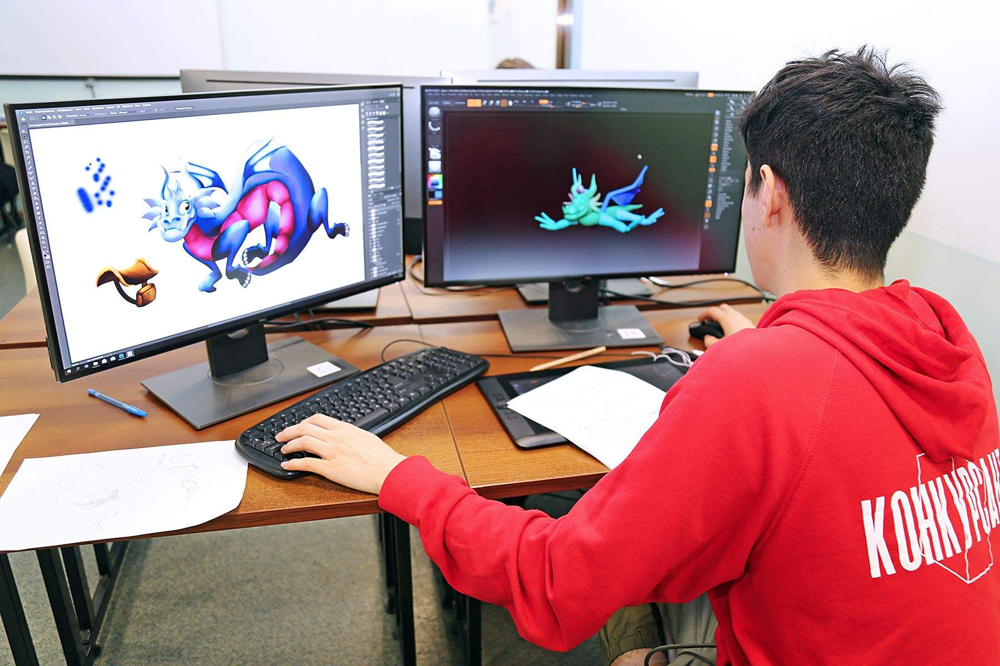

Разработчик игр – это современная востребованная специальность. Она привлекает тех, кто любит игры во всех проявлениях, и тех, кто хочет развиваться в сфере, не теряющей актуальность вот уже 20 лет. Секрет специальности в том, что чистых разработчиков не существует, но есть много направлений, которые один человек прекрасно совмещает.
Чем занимается разработчик игр??
Gameplay developer продумывает общую концепцию и механику в тесном контакте с 3D-аниматорами и гейм-дизайнерами.
Engine developer работает над созданием специальных шаблонов – утилит и тулзов, благодаря которым другие специалисты быстро решают свои задачи.
Animation developer отвечает за визуальную сторону новой игры. Он создает фоны, пейзажи, костюмы и внешний вид персонажей, инструменты и оружие.
DevOps developer обеспечивает комфорт пользователей, использующих для игры сторонние сервисы, например, Battle.net и Ubisoft.
UI и Client developers занимаются всеми элементами за пределами игрового мира – заставка, меню, переходы между разделами. От них зависит первое впечатление от игры, а также удобство геймеров в процессе ее прохождения.
Graphics programmer отвечает за то, чтобы приложение не предъявляло слишком высоких требований к устройствам и благодаря этому было как можно более доступным.
Back-end developer реализует внутреннюю структуру – сервера, парсинг, получение данных. От этого специалиста во многом зависит работоспособность игры.
